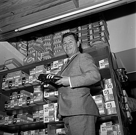
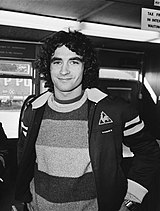
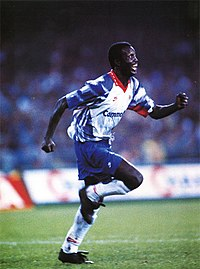
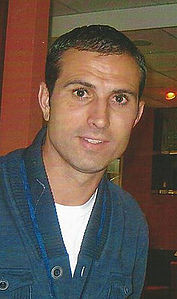

Paris Saint-Germain history
Creation and split (1970–1973)
In the summer of 1970, an ambitious group of businessmen decided to create a major team in the French capital. Guy Crescent and Pierre-Étienne Guyot chose to merge their virtual side, Paris FC, created in 1969, with Stade Saint-Germain of Henri Patrelle after the team from Saint-Germain-en-Laye, 15km west of Paris and founded in 1904, won promotion to Division 2. However, the three men were stuck with the financial feasibility of the project until they met Real Madrid president Santiago Bernabéu. He told them that starting a crowdfunding campaign was the best solution to establish a new team.20,000 people backed the project and Paris Saint-Germain were formed on June 17, 1970. Guyot was elected the club's first president a few days later. For the first time in French football history, the fans had financially contributed in the making of a club. The merger was made official following the creation of the club's association on August 12, 1970. PSG retains this day as their foundation date. Paris FC contributed with the financial backing, while Stade Saint-Germain provided the sporting infrastructure, from the Division 2 status to the Camp des Loges training center, as well as the manager Pierre Phelipon and most of the players, including Bernard Guignedoux, Michel Prost and Camille Choquier. PSG further strengthened their squad with the signing of Jean Djorkaeff, captain of the French national team. PSG's first official game was a 1–1 league draw away to Poitiers on August 23, 1970. Guignedoux scored the club's first ever goal from a free-kick.The club went on to clinch promotion to Division 1 and claim the Division 2 title in its inaugural season. PSG's first top-flight season ended with a safe 16th place, meaning they would stay in Division 1 next year, but behind the scenes the club was in a delicate financial situation. Back in September 1971, the Paris City Council offered 850k francs to pay the club's debt and save its place in the elite, demanding PSG in return to adopt the more Parisian name "Paris Football Club. Guy Crescent, who had replaced Pierre-Étienne Guyot as club president before the start of the season, was in favor of the name change, but Henri Patrelle was a gainst it. The disagreement led to Crescent's resignation in December 1971, handing the presidency to Patrelle. T he latter tried to persuade the council to reconsider their position, but they remained inflexible and the club split on June 1, 1972, a few days after the last match of the campaign. Backed by the council, Crescent re-formed Paris FC and remained in Division 1, while the PSG of Patrelle were administratively relegated to Division 3, thus losing professional status.

Pierre-Étienne Guyot and Henri Patrelle founded PSG in 1970.
Top-flight return and Parc des Princes move (1973–1978)
Paris Saint-Germain really took flight with the arrival of fashion designer Daniel Hechter as chairman of the management committee in June 1973. Besides offering his financial support to the club, he also designed the team's classic home outfit. Hechter then shocked the national game ahead of 1973–74 by appointing French legend Just Fontaine as sporting director. Robert Vicot's men finished second in Group B, four points behind Red Star, qualifying for the promotion play–offs against Valenciennes. PSG lost 1–2 away to Valenciennes, but PSG recorded an incredible 4–2 comeback at the Parc des Princes, thus achieving promotion to Division 1 and regaining its professional status abandoned two years earlier.Overwhelmed by emotion, Fontaine collapsed on the lawn and was then carried by the players in celebration. Since then, PSG have always played in the first tier of French football. PSG played their first game at the Parc des Princes during this campaign. It was against fellow Parisian side Red Star on November 10, 1973. PSG won 3–1 and Othniel Dossevi scored the club's first goal at the stadium. The Parisians also began their tradition of brilliant Coupe de France runs, reaching the quarterfinals after beating Metz at the Parc in front of 25,000 spectators (2–1; 4–1 on agreggate). In an ironic turn of events, Paris FC were relegated to Division 2 at the same time as Paris Saint-Germain moved up to the top flight in 1974, leaving their home stadium, the Parc des Princes, in the hands of their estranged Parisian brothers. Since then, the Parc has been the home of PSG. With promotion to Division 1 also came a change of command. Daniel Hechter, then chairman of the management committee, took over as club president in June 1974 following the resignation of Henri Patrelle. He named Francis Borelli as vice-president. Under Hechter's tenure, the Parisians failed to win any silverware in the 1970s but began their tradition of brilliant Coupe de France runs, established themselves in Division 1, and attracted several prestigious players, including Jean-Pierre Dogliani, Mustapha Dahleb and Carlos Bianchi. After Hechter was banned for life from football by the French Football Federation in January 1978, for running a ticketing scheme at the Parc des Princes, Francis Borelli, who had been vice-president until then, became the new boss of the Île-de-France club.
Just Fontaine helped Paris Saint-Germain return to Division 1 in 1974.
First major honours and decline (1978–1991)
Following the arrival of manager Georges Peyroche in November 1979, the club established itself as a top-half team and then welcomed its first major honour when the Parisians reached their first French Cup final in 1982. Up against the great Saint-Étienne of Michel Platini at the Parc des Princes, Nambatingue Toko opened the scoring for PSG following a good cross from Ivica Šurjak. Saint-Étienne reacted and Platini equalized to send the game to extra-time. Platini then doubled his personal account, giving the Greens the lead. The Parc des Princes faithful no longer believed in their team when Dominique Rocheteau, after yet another assist from Šurjak, scored an unexpected equalizer in the last seconds of the match. PSG fans invaded the field in joy, while club president Francis Borelli kneeled and kissed the lawn of the Parc. Following an interruption of 30 minutes, the penalty shootout sealed PSG's coronation. Dominique Baratelli stopped Saint-Étienne's last attempt and Jean-Marc Pilorget scored the winning penalty for the capital side. This success opened the doors to Europe, where PSG made an impressive continental debut in reaching the quarterfinals of the 1982–83 European Cup Winners' Cup.
On the domestic scene, results were just as satisfying. PSG captured their first podium finish, coming in 3rd place, and repeated the feat in the 1983 Coupe de France Final, this time against Nantes. Recently crowned French champions, the Canaries were headed for the league-cup double, leading at the break after overturning Pascal Zaremba's early strike. But PSG managed their own comeback in the second half as Sušić equalized and then assisted Toko for the winning goal (3–2). The campaign ended on a sad note, though, as Georges Peyroche left the club.
Three years later, under the guidance of manager Gérard Houllier, PSG claimed their maiden league crown in 1985–86. They dominated the championship from start to finish thanks in big part to the likes of Joël Bats, Dominique Bathenay, Luis Fernandez, Dominique Rocheteau and Safet Sušić, all of whom made up the backbone of the team. The victory away to Toulouse on Matchday 3 meant PSG sat at the top of the table for the first time ever, a spot they never relinquished, going a memorable 26 matches without defeat towards the title.
The follow-up to the league title was not as glorious though. Defending champions PSG finished the league in 7th place, suffered an early exit from the French Cup and were knocked out by Czech minnows Vítkovice in the first round of a dismaying European Cup debut. The following year, PSG avoided relegation on the final match of the 1987–88 season thanks to a dramatic 0–1 win away to Le Havre. Highly indebted, the club briefly bounced back, fighting for the 1988–89 league crown with Marseille, before going into decline.
Dominique Rocheteau scored one of the club's most iconic goals ever.
Canal+ takeover and golden era (1991–1998)
The takeover by television giants Canal+ in 1991 revitalised Paris Saint-Germain as they became one of the richest clubs in France. Canal+ wiped out PSG's huge debt and appointed Michel Denisot, journalist on the channel, as club president in place of Francis Borelli. Now enjoying serious investment, the Red and Blues were able to set their sights steadily higher: they had to qualify for European competitions in their first season and become French champions within three years. In consequence, Canal+ increased the club's budget from 90 to 120 million francs in order to build a strong squad for the 1991–92 season.The revolution began with the appointment of renowned coach Artur Jorge, famous for leading Porto to the 1986–87 European Cup trophy. The club then embarked on a spending spree, signing Brazilian stars Ricardo and Valdo as well as proven French players Paul Le Guen, Laurent Fournier, Patrick Colleter and prolific Liberian striker George Weah.
The 1992–93 season also marked the beginning of Le Classique, the rivalry between Paris Saint-Germain and Olympique de Marseille, as both teams battled each other on the field for the 1992–93 French Division 1 crown. PSG finished runners-up after losing both games against Marseille. In the second match between the two clubs, only three days after winning the 1992–93 UEFA Champions League, league leaders Marseille welcomed closest challengers PSG in a match that would determine the title.
After Marseille won their fifth consecutive championship, Bernard Tapie and Marseille were found guilty of match-fixing in what became known as the French football bribery scandal. The French Football Federation stripped Marseille of their title and offered it to second-placed PSG, who refused it because club owners Canal+ thought that claiming the trophy would anger their subscribers back in Marseille. As a result, the 1992–93 title remained unattributed, with Canal+ even refused letting the capital club participate in next year's Champions League after UEFA excluded Marseille from the competition. Instead, Monaco, who finish third in Ligue 1 took the Champions League spot instead.
Considered the club's golden era, the Parisians won nine trophies and reached five consecutive European semi-finals during the 1990s, including their first UEFA Champions League last-four appearance and two at the same stage of the UEFA Cup. PSG's crowning glory came in the 1996 UEFA Cup Winners' Cup Final with legend Luis Fernandez now as coach. Bruno Ngotty scored the only goal of the match to defeat Rapid Wien and make Paris the second French club to ever clinch a major European tournament and the youngest club in history to win a European title at 26 years of existence.The following season, PSG finished runners-up in the 1996 UEFA Super Cup and 1997 UEFA Cup Winners' Cup Final. On the domestic scene, results were just as satisfying, with Paris celebrating a second league title, three French Cups, two French League Cups and just as many French Super Cup wins.
George Weah during his playing days at Paris Saint-Germain.
Crisis mode and relegation battles (1998–2011)
PSG then went into decline following years of mismanagement. In the summer 2000, PSG spent heavily on new players signing Nicolas Anelka, Peter Luccin and Stéphane Dalmat as part of the "PSG Banlieue" project of its shareholder Canal+, with the goal of winning Ligue 1 and performing a solid UEFA Champions League campaign but it was a failure. In 2003, the club faced a massive financial loss with a deficit of €65 million, leading Canal+ to fire Luis Fernandez as coach and Laurent Perpère as president and replacing them with Vahid Halilhodžić, who became the new coach and Francis Graille the new president. The club's form dwindled as they slipped further down the table and eventually, a split from owners Canal+ became inevitable.
At the start of the 21st century, PSG struggled to rescale the heights despite the magic of Ronaldinho and the goals of Pauleta. Five more trophies arrived in the form of three French Cups (including one against Le Classique arch-rivals Marseille in 2006), one French League Cup and one UEFA Intertoto Cup, but the club became better known for lurching from one high-profile crisis to another. Following years of mismanagement, the club's form dwindled as they slipped further down the table and a split from Canal+ became inevitable.
The French premium television channel sold the club to Colony Capital in 2006. The situation, however, only got worse and PSG spent the 2006–07 and 2007–08 campaigns staving off relegations. The latter was the most dramatic. Marred by poor results and fan violence, Paris avoided the drop on the final match after a 2–1 win at Sochaux. The hero was Ivorian striker Amara Diané who scored both goals that night. Despite not enjoying the star status of other current or past PSG greats, Diané is still considered a legend by most Parisian fans.
Club legend Pauleta, who was PSG's all-time top goalscorer, before the QSI takeover.